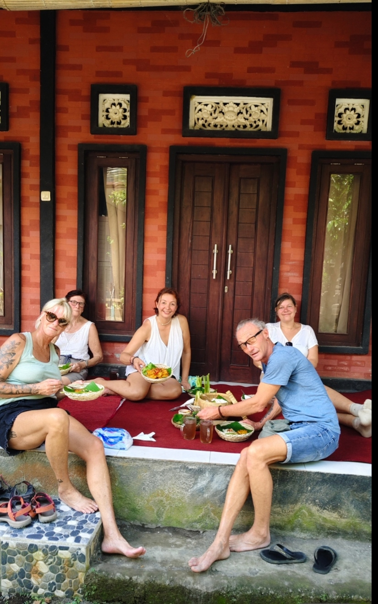
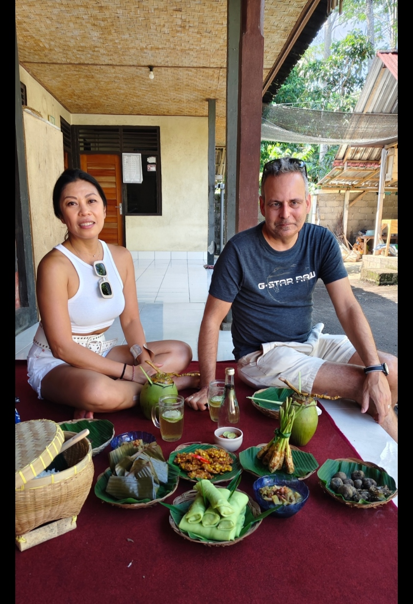
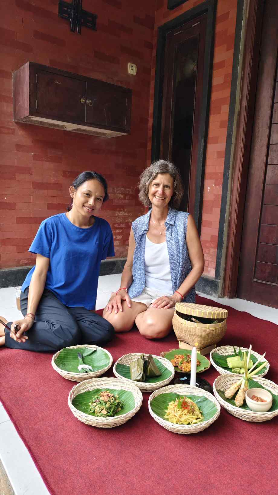
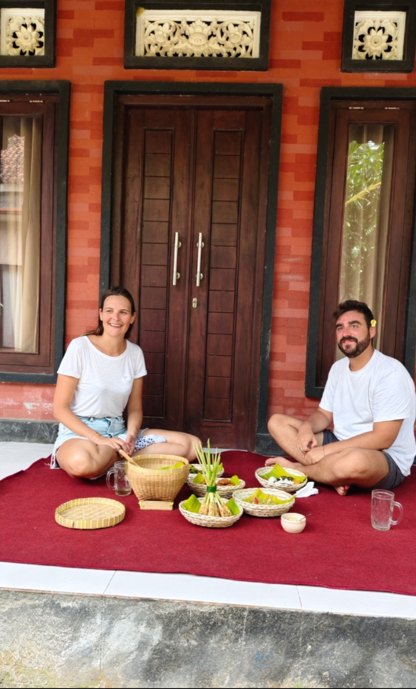

A Cultural Dining Experience in Sidemen
Join us for an authentic local lunch at Juni’s family home in Sidemen village. Enjoy freshly prepared Balinese dishes made with locally sourced ingredients, while discovering village life, family traditions, and Balinese culture.
This is more than just a meal — it’s a meaningful cultural dining experience where you connect with a local family, share stories, and taste authentic home-cooked recipes passed down through generations.
Known as one of the most authentic local lunch experiences in Sidemen, Juni’s House offers a unique opportunity to connect with Balinese culture through food, family, and storytelling.
✨ A truly personal and unforgettable experience in the heart of Sidemen.
This experience requires minimum booking 1 day in advance to ensure fresh preparation and the best quality.
For last-minute requests, feel free to contact us — we will do our best to check availability.
Starting from IDR 250K (~$18) per person
Minimum 2 participants
Sidemen Village, Karangasem, Bali, Indonesia
Loved by travelers seeking authentic Balinese food and cultural experiences in Sidemen.
5.0 out of 5 based on 13+ reviews
“The best Balinese lunch experience in Sidemen 💚”
We had an unforgettable experience with Kadek and his wife, Juni.
They welcomed us into their home with warmth and shared deep insights into Balinese culture.
The highlight was the authentic lunch, prepared from scratch — every dish was made with love.
It felt like visiting family, not just a tour.
Highly recommended!
“One of the most authentic experiences in Bali. The food, the family, and the atmosphere were amazing.”
“Real Balinese culture, not touristy at all. Amazing food and very welcoming family.”